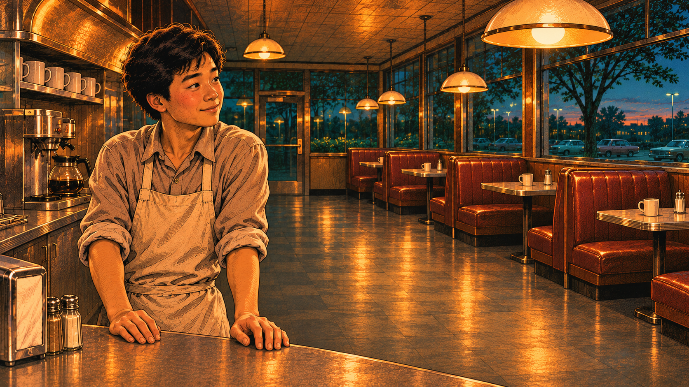
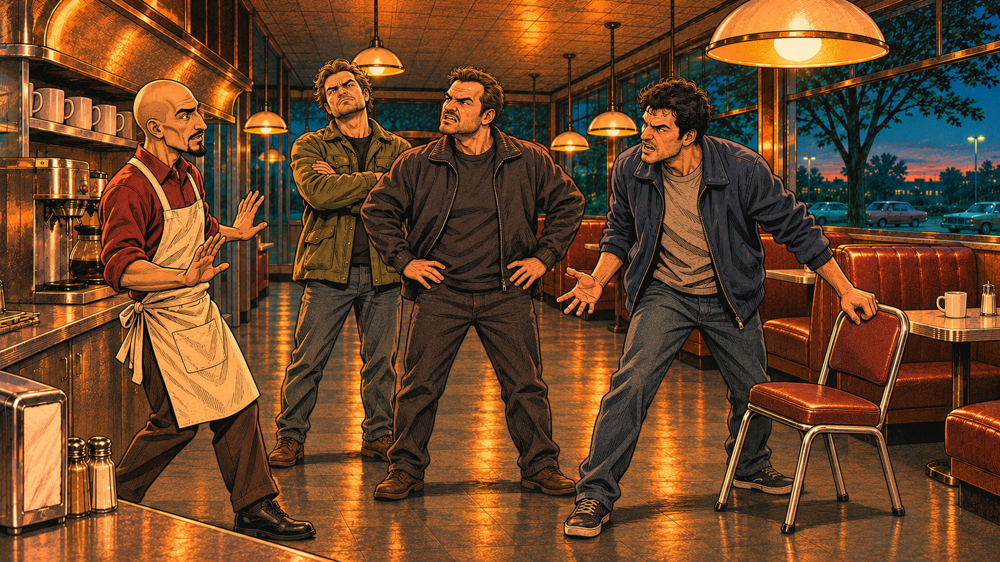
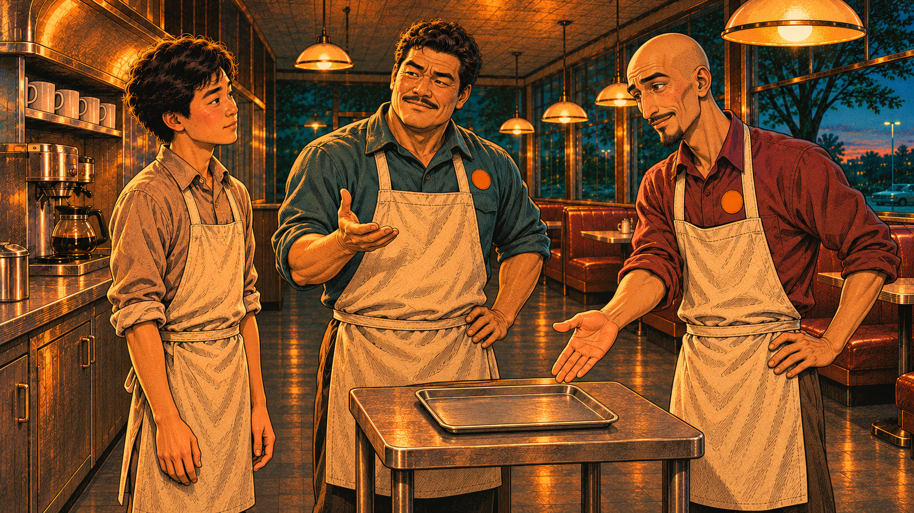
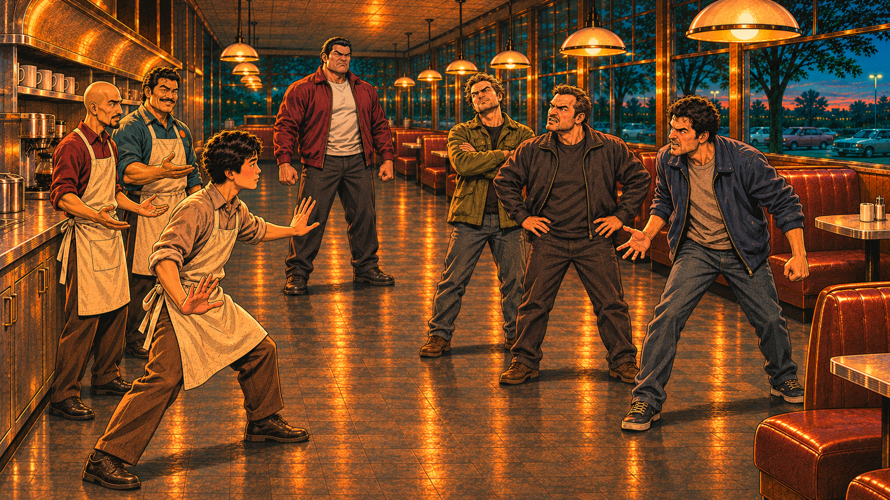
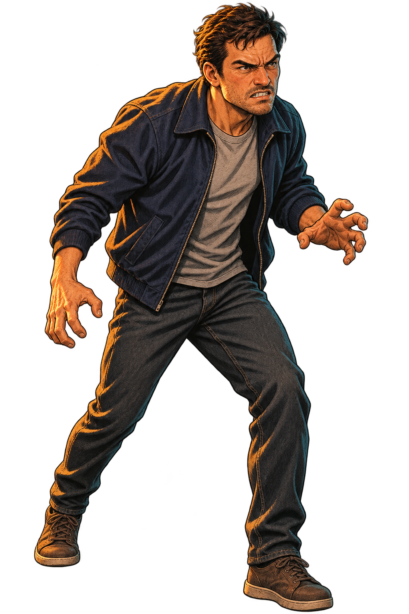
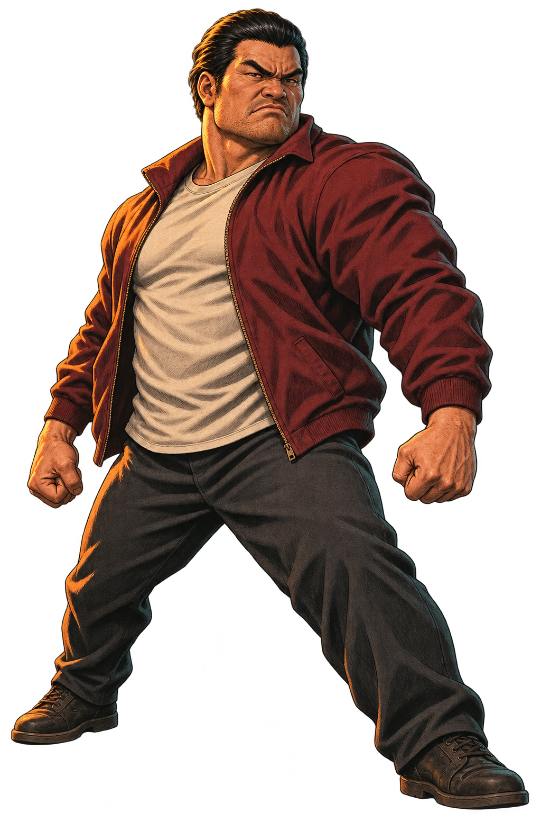
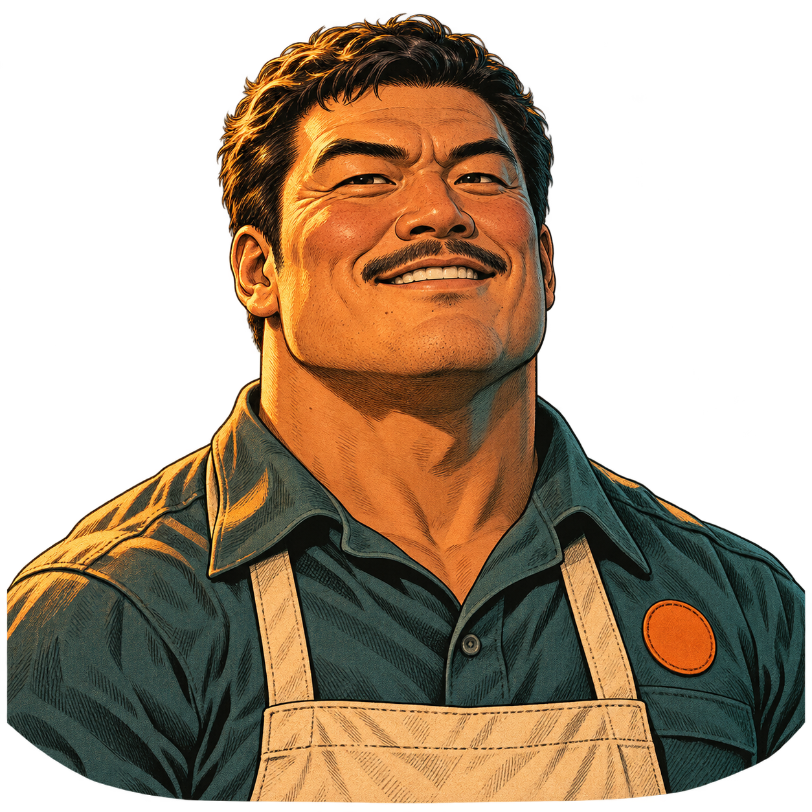

第一次 · 同事提供
首名指定顾客收势结束，或被击败后
“托盘放这儿，顺路就拿！”
同事朝第一处托盘点示意；不是开场就有可拾取盘，也不是任意顾客都重复送盘。
JENSEN · 少年篇 / R8 首关评审
少年空手面对闹事顾客，领班和同事留在边线提供托盘援助。先让开冲撞，再抓住收势时机。
原创幻想：闹事、人物冲突与打斗不是黄仁勋真实生平事件。
打开可玩候选 ↗构建时状态：本地预览，尚未发布。稳定入口可能仍是上一版本；本页不证明 R8 已上线或实玩通过。
01 / 开场
四镜可以跳过。开场仍是空手、两个主动槽未开放；图里的托盘和大客是剧情预示，战斗中的出现时机另有规则。

少年黄仁勋，刚刚开始这一班。
只复用柜台与少年形象；这是静态剧情图，没有出拳或可拾取事件。
打开完整原图 ↗
几名闹事顾客推开椅子，堵住了过道。
画面为抓椅与围堵的一刻，不证明连续推椅动作；围裙同事是退让的援手。
打开完整原图 ↗
同事：先躲开冲撞，我会把托盘放到桌边。
这是未来援助预告，小桌并非严格藏在柜台后；实际托盘按战斗事件出现，不能从这张图开始就拾取。
打开完整原图 ↗
先让开冲撞。领班和同事，会在边上帮你。
大客仅作剧情预示，正式入场仍等三名顾客退场；这不是实际游戏镜头或当前敌人数量证明。
打开完整原图 ↗02 / 敌我身份

便装、空手、较窄身形，与穿围裙的员工和宽肩Boss区分。
只有深蓝衣装的一张姿态；深灰与橄榄色变体、连续冲撞、受击与退出动作未由此图覆盖。
打开完整原图 ↗
大客没有围裙或员工名牌；体格明显比普通顾客厚重。
只有一张站姿，不能充当预警、冲出、低头喘气三段动画。与实际场景的透明边缘合成尚未验证。
打开完整原图 ↗三名普通闹事顾客先登场，分别采用深蓝、深灰、橄榄色便装。下图普通顾客是造型样件，不代表三名独立角色均已绘制。三人全部退场后，带头的大客才进入战斗。

三名顾客退场、Boss入场时，领班提示第二处托盘机会。
旧图只作为援手外形参考，不是新绘Boss图；头像不证明运行中的指示手势。
打开完整原图 ↗指定首名顾客收势结束或被击败后，同事提示第一处托盘机会。
旧敌人文件名只记录来源，R8角色是同事援手；不攻击、不受伤、不计敌。
打开完整原图 ↗领班与同事留在柜台或边线，有“援手”标识。他们不攻击、不受伤、不挡路、不计入清场，也没有护送血条或保护失败条件。
03 / 单次锁向重冲撞
宽肩、黑发后梳、深酒红夹克与浅色 T 恤的大客是本关 Boss。只有一套重冲撞；下面是合同中的动作与起测时序，并非动作帧或录像。
脚撑开、肩后拉。方向锁定后不再追瞄，留出侧向让开的时间。
身体前倾，沿刚才提示的方向冲出；命中玩家或撞墙会提前结束冲撞；不表示被玩家打中就能打断。
不继续攻击或转身追随。这是空手接近、反击的预期窗口。
实际可读性、锁向、命中与恢复窗口须在运行中验证，不能由立绘判定通过。
04 / 援手时机
第一次 · 同事提供
“托盘放这儿，顺路就拿！”
同事朝第一处托盘点示意；不是开场就有可拾取盘，也不是任意顾客都重复送盘。
第二次 · 领班提供
“这里还有托盘，先看清他冲哪边！”
领班指向第二处机会。已经持盘时不会再叠加、回血或重置攻击。
两处各提示一次，靠近即可拾取；不强制暂停或按键。托盘是优势，不是通关钥匙，纯空手路线仍须可行。关尾仍只获得一次永久双 GPU 拳套，托盘退出。
05 / 本页证明了什么
四镜图像、顾客与 Boss 造型、两位援手参考，以及动作和托盘时机的文字合同。每张图标明新图或复用来源；静帧不是运行截图。
援手可见且不参与战斗判定、两次托盘触发、Boss三阶段、空手可行性、一次永久奖励和旧存档恢复。窄屏、焦点、图片失败和真实设备体验也不能靠本页验收。
N01仍明显跨年至1993三位创始人，再进入1997背景；后续关卡与成长路线沿原范围。第八奖励由用户暂缓决定，未来分享模块不在本轮实施。